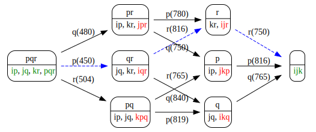

TFT: Memory Optimal Contraction of Multiple Tensors
This tutorial lists steps to identify least memory using contraction order of a given contraction of multiple tensors (CMT) expression.
CMT Description
First step is to define a model using TFT primitives. Lines below define the Tucker3 model:
X(i,j,k) = sum_(p,q,r) A(i,p) B(j,q) C(k,r) G(p,q,r)
Define dimensions, which may be used in multiple models:
dim_i = TFDimension('name', 'i', 'cardinality', 5);
dim_j = TFDimension('cardinality', 6, 'name', 'j');
dim_k = TFDimension('cardinality', 7, 'name', 'k');
dim_p = TFDimension('cardinality', 8, 'name', 'p');
dim_q = TFDimension('cardinality', 9, 'name', 'q');
dim_r = TFDimension('cardinality', 10, 'name', 'r');
Define factors:
A = TFFactor('name', 'A', 'type', 'latent', 'dims', [dim_i dim_p], 'data_mat_file', '/tmp/saved_variable.mat');
B = TFFactor('name', 'B', 'type', 'latent', 'dims', [dim_j dim_q]);
C = TFFactor('name', 'C', 'type', 'latent', 'dims', [dim_k dim_r], 'isClamped', true);
G = TFFactor('name', 'G', 'type', 'latent', 'dims', [dim_p, dim_q, dim_r]);
X = TFFactor('name', 'X', 'type', 'observed', 'dims', [dim_i, dim_j, dim_k]);
- type: type of the factor, values: latent, observed, temp.
- isClamped: data belonging to the latent factor is provided as input, values: true, false
Define the model:
tucker_model = PLTFModel('name', 'Tucker3', 'factors', [A B C G X], 'dims', [dim_i dim_j dim_k dim_p dim_q dim_r]);
Please note that order of dimensions in the dims array are important.
Providing data to model elements
tucker_model.init_factors_from_file();
To provide initial data for a factor, a variable with proper name must be defined in Matlab's global workspace. For instance, lines below define data for factor C:
global C_data;
C_data = load('my.mat', 'my_variable');
Please note name of the variable. It is generated as follows: variable_name + '_data'.
Random initialization
TFFactor contains a convenient rand_init function. This function takes two parameters:
- all_dims: all dimension objects array.
- max_int: maximum range of random integers.
For example the line below generates random data element for factor A of the Tucker3 model we described above:
A.rand_init( tucker_model.dims, 100 );
PLTFModel contains init functions to generate data for 'nonClamped' or 'all' factors:
tucker_model.rand_init_latent_factors('nonClamped'); % does not initialize clamped latent factors
tucker_model.rand_init_latent_factors('all', 50); % initialize all latent factors with randi(50)
Memory Optimal Contraction Order
Using the CMT description we can generate a contraction order graph with the command below:
addpath utils;
tucker_model.print_optimal_contraction_sequence()
1 contract dimension p -> tmp_i_q_r_minus_p = A G
2 contract dimension q -> tmp_i_j_r_minus_q = B tmp_i_q_r_minus_p
3 contract dimension r -> tmp_i_j_k_minus_r = C tmp_i_j_r_minus_q
If you are running a Linux system with a graphviz package, you can use the following command to visualize possible contraction sequences:
graph = tucker_model.schedule_dp();
system([ 'echo '' ' graph.print_dot [ ' '' | dot -T svg | display' ]]);
Image below is produced by using the model above. Each node has two sections. Top section contains contraction dimensions. Bottom section represents factors available using their data dimensions. For instance first node on the left in the image below represents represents initial condition of the model with initial contraction dimensions p, q and r. Bottom section of the node contains all of the factors of the model since we have not performed any contractions yet.

You can perform the contraction of multiple tensors operation with the memory optimal contraction order using the following lines:
contracted_model = tucker_model.optimal_contact_all();
The observed factor of the model now contains the result of the computation. You can access this data using the lines below for the model above:
global X_data;
display(X_data);